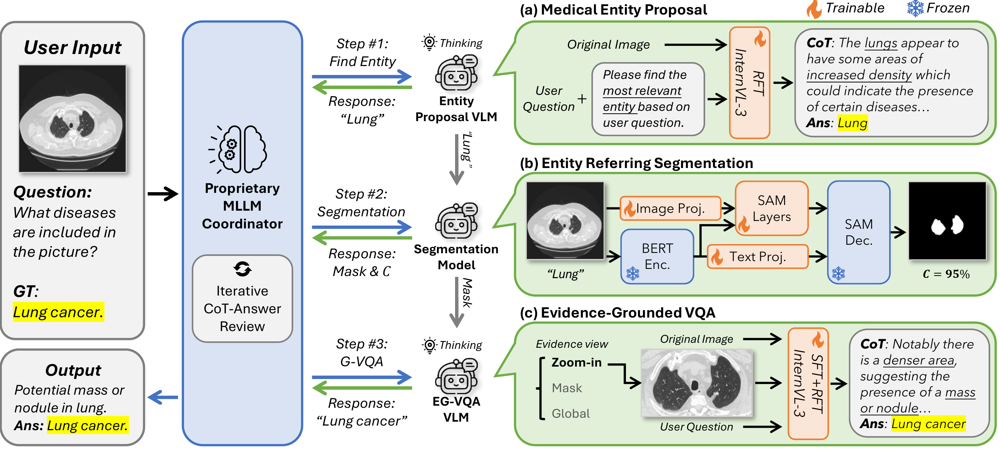

Abstract
Large visual language models (VLMs) have shown strong multi-modal medical reasoning ability, but most operate as end-to-end black boxes, diverging from clinicians' evidence-based, staged workflows and hindering clinical accountability. Complementary to this, expert visual grounding models can accurately localize regions of interest (ROIs), providing explicit, reliable evidence that improves both reasoning accuracy and trust.
In this paper, we introduce CARE, advancing Clinical Accountability in multi-modal medical Reasoning with an Evidence-grounded agentic framework. Unlike existing approaches that couple grounding and reasoning within a single generalist model, CARE decomposes the task into coordinated submodules to reduce shortcut learning and hallucination: a compact VLM proposes relevant medical entities; an expert entity-referring segmentation model produces pixel-level ROI evidence; and a grounded VLM reasons over the full image augmented by ROI hints. The VLMs are optimized with reinforcement learning with verifiable rewards to align answers with supporting evidence. Furthermore, a VLM coordinator plans tool invocation and reviews evidence-answer consistency, providing agentic control and final verification.
Evaluated on standard medical VQA benchmarks, our CARE-Flow (coordinator-free) improves average accuracy by 10.9% over the same size (10B) state-of-the-art (SOTA). With dynamic planning and reviewing, our CARE-Coord yields a further gain, outperforming the heavily trained SOTA by 5.2%. Our experiments demonstrate that an agentic framework that emulates clinical workflows, incorporating decoupled specialists and explicit evidence, yields more accurate and accountable medical AI.
Method

CARE decomposes multi-modal medical reasoning into specialized sub-tasks and integrates expert visual tools with agentic coordination, aligning the pipeline with clinical practice. Given a user question and a medical image, CARE executes three stages:
Stage 1: Medical Entity Proposal
A question-conditioned, compact VLM proposes relevant anatomical structures or findings (e.g., organs, lesions, devices). The VLM is fine-tuned with reinforcement learning using a verifiable, embedding-similarity reward for evidence-consistent proposals.
Stage 2: Entity Referring Segmentation
A tailored referring-segmentation model, built on SA-Med-2D with a biomedical text encoder, localizes the proposed entities and produces pixel-level ROI evidence. A confidence score filters out low-quality segmentations to prevent noisy evidence from harming downstream reasoning.
Stage 3: Evidence-Grounded VQA
A fine-tuned VQA model reasons over the full image augmented by one of three evidence views reflecting clinical practice: (i) a zoom-in crop for local detail, (ii) a binary mask for positional/spatial priors, or (iii) a global indicator when local evidence is unnecessary.
CARE-Flow executes a static pipeline through all three stages with majority voting. CARE-Coord adds a dynamic VLM coordinator that plans tool invocations, selects the most informative evidence view, and performs iterative chain-of-thought review to verify reasoning quality and mitigate hallucinations.
Results
Overall Performance Comparison
We evaluate CARE on four standard medical VQA benchmarks: OmniMedVQA, VQA-RAD, SLAKE (in-domain), and VQA-Med-2019 (out-of-domain), spanning over ten image modalities and multiple organs. Open-ended questions are scored by GPT-4o against ground-truth answers.
Quantitative Results on Medical VQA Benchmarks
| Model | OMVQA-3k | VQA-RAD | SLAKE | VQA-Med-2019 | Overall |
|---|---|---|---|---|---|
| Proprietary | |||||
| GPT-4o | 64.07 | 58.54 | 63.55 | 59.60 | 61.44 |
| GPT-5 | 74.73 | 63.19 | 67.75 | 62.20 | 66.97 |
| Open-Source General VLMs | |||||
| Llama-3.2-11B-Vision | 43.10 | 53.22 | 63.17 | 57.40 | 54.22 |
| Qwen2.5-VL-7B | 61.40 | 54.10 | 59.73 | 50.60 | 56.46 |
| Qwen2.5-VL-32B | 65.10 | 61.20 | 65.46 | 51.60 | 60.84 |
| InternVL3-8B | 75.97 | 61.86 | 66.13 | 57.40 | 65.34 |
| InternVL3-38B | 78.57 | 62.97 | 68.70 | 58.80 | 67.26 |
| DeepEyes-7B | 57.40 | 56.10 | 61.16 | 52.20 | 56.72 |
| Medical Expert VLMs | |||||
| LLaVA-Med-7B | 45.30 | 41.91 | 50.86 | 37.00 | 43.77 |
| MedVLM-R1-2B | 72.07 | 41.46 | 46.47 | 45.40 | 51.35 |
| medgemma-4b | 61.50 | 58.09 | 69.66 | 47.40 | 59.16 |
| medgemma-27b | 64.23 | 62.75 | 70.52 | 48.40 | 61.47 |
| HuatuoGPT-Vision-7B | 70.70 | 59.87 | 60.50 | 57.20 | 62.07 |
| HuatuoGPT-Vision-34B | 76.80 | 60.75 | 64.12 | 60.60 | 65.57 |
| Lingshu-7B | 73.17 | 58.54 | 76.15 | 58.80 | 66.66 |
| Lingshu-32B | 83.97 | 64.75 | 82.25 | 58.20 | 72.29 |
| Ours | |||||
| CARE-Flow-S (4B) | 94.53 | 56.32 | 78.44 | 53.60 | 70.72 |
| CARE-Coord-S | 97.70 | 62.75 | 77.19 | 60.60 | 74.56 |
| CARE-Flow-B (10B) | 96.17 | 63.64 | 83.21 | 56.60 | 74.91 |
| CARE-Coord-B | 97.97 | 68.29 | 83.11 | 60.80 | 77.54 |
Bold = best, underline = second best. Medical expert VLMs are shown with gray background; our methods are in green.
See more ablation experiments and analysis in our paper.
Qualitative Examples
We present case studies showing CARE-Coord's complete reasoning trace. The coordinator plans tool invocations, selects the optimal evidence view, and reviews the chain-of-thought for consistency. Key coordinator outputs are highlighted in blue, model reasoning in green, and final answers in yellow.
Conclusion
We propose CARE, a medical vision reasoning agent that follows a real-world visual-guided clinical decision-making process. Rather than producing a single-shot, black-box output, CARE divides medical decision-making into three interpretable stages with dedicated expert models: identify the entity of interest, localize the ROI on the image, and reason using local visual evidence.
Compared to existing methods, CARE not only achieves stronger performance on open benchmarks, but also demonstrates greater accountability and reliability. With a robust coordinator (CARE-Coord), dynamic planning and iterative chain-of-thought review further expand its capability, yielding competitive accuracy in both in-domain and out-of-domain settings.
Ethics Statement
This work uses only publicly available medical VQA benchmarks (OmniMedVQA, VQA-RAD, SLAKE, VQA-Med-2019) and segmentation data (SA-Med-20M); no new data were collected and no patient interaction occurred. All datasets are used under their respective licenses, with no attempt to re-identify individuals. This system is intended for research use only and must not be used for clinical diagnosis or treatment.
BibTeX
@misc{du2026care,
title={CARE: Towards Clinical Accountability in Multi-Modal Medical Reasoning with an Evidence-Grounded Agentic Framework},
author={Yuexi Du and Jinglu Wang and Shujie Liu and Nicha C. Dvornek and Yan Lu},
year={2026},
eprint={2603.01607},
archivePrefix={arXiv},
primaryClass={cs.AI},
url={https://arxiv.org/abs/2603.01607},
}